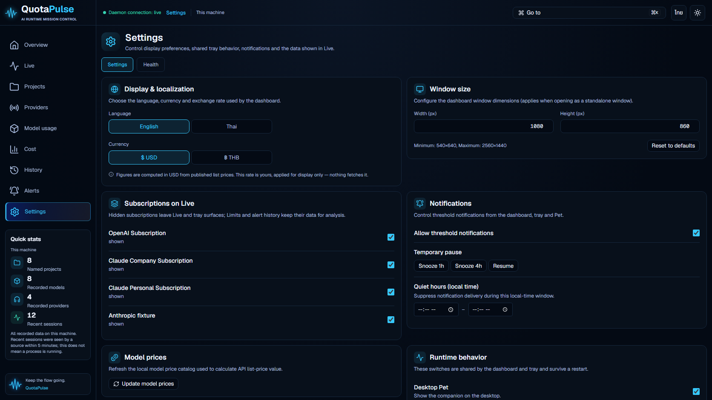

QuotaPulse Settings v1.45 review
QuotaPulse Settings v1.45
ภาพแอปจาก build ที่ตรวจแล้ว ใช้ฐานข้อมูลจำลองในการทดสอบ มีทั้งภาษาไทย/อังกฤษและสองธีม หน้า Settings ไม่มีภาพต้นฉบับใน refs จึงยังไม่มีการเทียบความเหมือนของหน้านี้
ภาพขนาด 1672 × 941 แสดงส่วนบนของหน้าที่เลื่อนดูต่อได้ในแอป ไม่มีการตัดออกจากการทดสอบการทำงานของ preference controls
